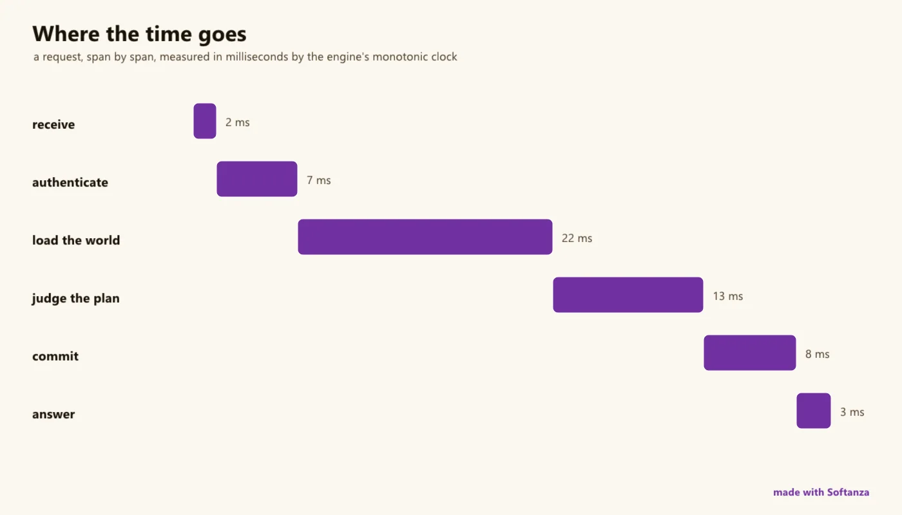

La performance, dans Softanza, est une chose qu'un programme sait de lui-même : le moteur mesure, le code déclare le budget, et tout acte correctif passe par la gouvernance.
Un seul plan fait ce que le domaine répartit entre plusieurs outils. Il ferme les trois signaux, métriques, traces et journaux, dans les formats ouverts que les autres outils lisent, OpenTelemetry et Prometheus, et ajoute ce qu'ils laissent à d'autres : un jugement de niveau de service, l'attente que le 95e centile reste sous une borne, qui devient un constat dans la même porte que les règles de sécurité et fait échouer la compilation ; une sentinelle à déclenchement sur front avec une boîte noire ; un profileur par échantillonnage avec sortie en graphe de flammes ; un banc de charge pilotée ; et une analyse de capacité par la théorie des files, utilisation, loi de Little, marge, heures avant le plafond mémoire, chacune vérifiée contre une seconde mesure indépendante, parce qu'une formule bâtie sur un seul jeu de nombres ne peut jamais échouer et ne prouve donc rien.
o1 = new stzMetric("http.request.ms", :timer)
o1 {
Record(12)
Record(15)
Record(18)
Record(250)
}
? o1.Count()
#--> 4
# the exact mean over the lifetime
? o1.MeanMs()
#--> 73.75
exécuté dans la bibliothèque le 2026-10-20
Sa signature est la discipline de mesure, et les lois qu'elle a frappées lient désormais toute la bibliothèque. Les horloges sont des portées : les durées ne viennent que d'une horloge monotone, l'heure murale ne fait qu'estampiller. Windows quantifie le temps CPU par pas de 15,6 ms, donc une lecture de 15,63 ms est un pas, pas une mesure. Le moniteur dit son propre coût, et une garde échoue si observer dépasse une part déclarée du travail. Un ratio vivant s'affirme comme une plage, jamais une égalité, parce qu'il dérive dans les deux sens pendant que les impressions de la garde elle-même brûlent du CPU. Non mesuré est une erreur, jamais un succès silencieux.
o1 = new stzStopwatch("job")
o1.Start()
? o1.IsRunning()
#--> TRUE
o1.Lap("parse")
o1.Lap("render")
o1.Stop()
? o1.IsRunning()
#--> FALSE
? o1.NumberOfLaps()
#--> 2
# the clock is monotonic, and its trace identity is a W3C one
? o1.Elapsed() >= 0
#--> TRUE
? len(o1.TraceId())
#--> 32
exécuté dans la bibliothèque le 2026-10-20
Ce qu'il n'est pas, par conception, c'est la moitié stockage et tableaux de bord : pas de base de séries temporelles, pas de langage de requête, pas de graphiques d'historique ; il instrumente, juge et exporte, et laisse le reste au collecteur. Six couloirs Strong, cinq Solid ; les dus sont l'instrumentation automatique et le contexte de trace porté à travers le travail asynchrone.

une requête, étape par étape, mesurée par l'horloge monotone du moteur. dessiné le 2026-10-01 par le script du site tools/areas-figurative.ring, exécuté dans la bibliothèque au commit 0e72e2e2c · la source(s'ouvre dans un nouvel onglet)
Où il en est
La lecture du Compas Softanza : chaque couloir du domaine noté face au meilleur de sa catégorie, d'après ce que les gardes prouvent (Read from the source on 2026-09-16, from a read-only main worktree). Les phrases du Compas sont en anglais, telles qu'il les a écrites.
One of the most complete and rigorous planes in the library — P0–P11 all shipped, 366 assertions — and it does what OpenTelemetry and Prometheus split across separate tools: it closes the OTel triad (metrics + traces + logs, all in native OTLP JSON) and exposes Prometheus text, and adds SLA judgment with edge-triggered alerting, a sampling profiler, queueing-theory capacity analysis (utilization & Little's law, each with an independent self-check), and a driven-load harness — one coherent plane. Its real signature is measurement discipline: clocks as scopes, Windows 15.6 ms quantization handled, self-cost priced with its own machinery, and a rule that unmeasured is an error, never a silent pass. What it is not, by design, is the storage-and-dashboard half.
The honesty line on the ratings. Re-surveyed from main. Genuinely complete — every P0–P11 identifier resolves to real code — and rigorously guarded: 366 assertions across 12 guards plus ~22 engine zig test blocks, proving exact-transfer via frozen stubs, live-value ranges (not equalities, because live ratios drift both ways), and the self-check identity law (Little's implied N vs a counted in-flight; anchor-computed U vs a sampled gauge). The measurement laws are the transferable product. One stale metadata line noted above (the laws list itself is current); deliberate scope: export-only, HTTP-seam trace propagation, cooperative profiler frames, macOS RSS.
The one-sentence position. Softanza's performance plane is a single coherent system that closes the OpenTelemetry triad, exposes to Prometheus, and adds the SLA judgment, capacity analysis and load testing those tools leave to others — held to a measurement rigor most SDKs don't reach; its one deliberate boundary is that it instruments and analyses but does not store, query or draw.
Ce qu'un artisan en fait, et ce qui se distingue
Closes the OTel triad (metrics + traces + logs) and exposes Prometheus text, in one plane
Measurement discipline: clocks as scopes, Windows 15.6 ms quantization handled, self-cost priced with its own machinery
Unmeasured is an error, never a silent pass
Queueing-theory capacity analysis with independent self-checks (utilization, Little's law)
Ce qui est dû
Auto-instrumentation (zero-code, opt-out rather than opt-in Observe)
Full trace-context propagation (baggage, async-context through reactor jobs, per-task scopes)
A storage/dashboard integration story; macOS RSS; one stale CLAUDE.md metadata line (P0-P7 / 283 vs P0-P11 / 366)
Repensé depuis les premiers principes
Ce que Softanza a gardé de ce qui marche, et ce qu'elle a repensé, tel que la bibliothèque l'a écrit dans ses documents de conception et ses narrations.
La manière SoftanzaLa performance est une chose qu'un programme sait de lui-même : le moteur mesure, le code déclare le budget, et toute action corrective passe par la gouvernance.
Gardé des meilleures pratiques
Les données sortent dans des formats ouverts : texte Prometheus, OpenTelemetry (OTLP) et identifiants de trace W3C. Stockage et tableaux de bord restent, à dessein, à ces outils. source(s'ouvre dans un nouvel onglet)
L'analyse s'appuie sur les lois classiques : utilisation U = X·D et loi de Little N = X·R. Le temps de réponse est une distribution (p50, p95, p99), jamais une moyenne. source(s'ouvre dans un nouvel onglet)
Les durées se mesurent uniquement avec des horloges monotones, insensibles aux corrections de l'heure réseau. L'heure murale sert à dater, jamais à chronométrer. source(s'ouvre dans un nouvel onglet)
Repensé
Le budget de performance est du code, déclaré près de ce qu'il juge. Un objectif manqué devient un constat qui fait échouer le build, par la même porte que la sécurité. source(s'ouvre dans un nouvel onglet)
Observer librement, agir par la porte. Augmenter la capacité ou redémarrer est un plan gouverné ; un acteur de type modèle de langage peut l'analyser et le proposer, jamais l'exécuter. source(s'ouvre dans un nouvel onglet)
Chaque mesure est recoupée par une autre, indépendante : la loi de Little contre les requêtes en cours comptées. Une formule qui ne peut échouer ne prouve rien. source(s'ouvre dans un nouvel onglet)
Le moniteur annonce son propre coût : SelfCost() le mesure, un test échoue s'il dépasse une part fixée du travail, et des anneaux de taille fixe gardent la mémoire stable. source(s'ouvre dans un nouvel onglet)
Un exemple, exécuté
Un chronomètre honnête : horloge monotone, millisecondes, et la boucle qu'il a mesurée.
Softanza
oW = new stzStopwatch("loop")
oW.Start()
x = 0
for i = 1 to 200000
x += i
next
oW.Stop()
? oW.Elapsed()
? x
Sortie
7.91
20000100000
exécuté le 2026-10-01 à 01:52 ; la valeur est en millisecondes et varie avec la charge de la machine
12 couloirs, chacun face au meilleur de sa catégorie
Pour chaque couloir : ce qui tourne dans le moteur aujourd'hui, les outils contre lesquels il est juste de le mesurer, et ce qui reste dû.
01Metrics & labeled familiesStrong
In the engine
Counters / gauges / timers (stzMetric) and Prometheus-style labeled families (stzMetricFamily) with the child registry engine-side (perf.zig Family) so children are visible across all Haro faces, and cardinality bounded at birth with a reserved, counted overflow child.
Measured against
Prometheus clientOTel metricsMicrometer
To complete
At parity — full metric types, labels, and bounded cardinality that never silently drops. The overflow child is the honest touch most clients lack.
02Percentiles & histogramsStrong
In the engine
Two independent engines: an O(1) log-bucket sketch (histogram.zig, 16 fixed ms bounds + overflow) and a sort-exact nearest-rank over the retained window (perf_series_percentile) — plus histogram_sum keeping an exact lifetime sum while the buckets quantize, so the mean is exact.
Measured against
Prometheus histogramsHdrHistogramOTel
To complete
Exact and sketch, both labeled by kind at the call site — ahead of Prometheus's bucket-only summaries. Nothing structural owed.
03Exposition & exportStrong
In the engine
Both worlds, all three signals: Prometheus text (PromText, label-aware) and OTLP JSON for metrics (OtelJson), spans (stzOtelBatch) and logs (stzLog.OtelJson). Built-in GET /metrics + /health; pull (scrape) and push (OTLP) both present.
Measured against
Prometheus expositionOTLPStatsD
To complete
Broad exposition across both ecosystems and all three OTel signals. The storage/query side it deliberately leaves to the scraper (lane 12).
04SLA judgment & alertingStrong
In the engine
stzSla (ExpectP95(...).Under(...), warnings, CheckAgainst) emits verdicts in the unified rule shape into stzRuleReport (subject perf); stzPerfSentinel is edge-triggered (OnBreach/OnClear, event-bus fanout, a flight-recorder black box). NOT-MEASURED is an error, never a silent pass.
Measured against
Prometheus AlertmanagerGrafana alertingOTel (no alerting)
To complete
SLA + alerting integrated into the same plane and the one CI gate — OTel has no alerting at all, and Prometheus's is a separate service. A distinctive, coherent lane.
05Measurement disciplineStrong
In the engine
The plane's signature: clocks as scopes (monotonic watch.zig for durations, epoch wall kept separate), Windows 15.6 ms quantization handled (a "15.63 ms" read is one tick), SelfCost() priced with its own machinery (~0.03 ms), exact-transfer proven against frozen stubs, and the self-check identity law — a real check compares two independent measurements.
Measured against
(most SDKs get burned by these)JFR rigor
To complete
Category-leading rigor — the transferable laws (leave-one-out z, the f64 2⁷³ serialization boundary, guard-honesty for live values) are arguably the plane's most valuable export.
06Capacity & queueing analysisStrong
In the engine
stzPerfProfile: utilization, throughput, response time, service demand, MaxThroughput, Headroom, a computing/waiting Bottleneck split, MemoryTrendPerHour / HoursToMemoryCeiling, and Little's law with an independent counted-in-flight self-check.
Measured against
APM analysisOTel (none)Prometheus (none)
To complete
Operational queueing-theory analysis neither OTel nor Prometheus offers — utilization and Little's law checked against a second, independent measurement, not asserted as an identity.
07Distributed tracingSolid
In the engine
Real W3C traceparent spans: parent→child join, an engine trace ring, and OTLP resourceSpans export (stzOtelBatch) that a Jaeger/Tempo collector reassembles. Every observed request gets a trace identity and echoes the header.
Measured against
OpenTelemetry tracingJaeger / Tempo
To complete
Propagation is at the HTTP seam only — no baggage, no async-context through reactor jobs — a single global trace scope, and drop-oldest ring sampling rather than OTel head/tail. Below OTel's full context propagation.
08Log↔trace correlationSolid
In the engine
Inside a trace scope (stzTraceScope), every stzLog record stamps a queryable traceId; OfTrace(id) recovers a trip's log lines and OtelJson ships OTLP logs with traceId first-class — closing the third leg of the triad.
Measured against
OTel logsstructured logging + trace ctx
To complete
One global scope slot — correct for one-request-per-loop, but parallel in-process dispatch would need per-task scopes (the same limit as tracing).
09The instrumentation bracketSolid
In the engine
Observe / ObserveRoutes wrap the appserver request seam, recording the well-known subjects (http.request.ms, http.requests, http.errors, http.route.ms), and stzStopwatch brackets any operation.
Measured against
OTel auto-instrumentationPrometheus middleware
To complete
Instrumentation is manual (you call Observe) — no auto-instrumentation of frameworks the way OTel agents wrap a server, client and DB without code changes.
10ProfilingSolid
In the engine
stzProfiler over an engine frame stack (per-path calls / total-ns / self-ns) and a real engine sampler thread photographing the active path, with folded (flamegraph-ready) output (WriteFoldedTo) and self-cost pricing.
Measured against
JFRpy-spy / pprofperf
To complete
Frames are cooperative (Enter/Leave), not native-stack unwinding — depth-capped and bounded-path — so it profiles instrumented code, not an arbitrary un-instrumented call tree.
11Governed tuning & load harnessSolid
In the engine
stzPerfPlan — a closed catalog of optimization actions an LLM may propose but only an effectful actor may ExecuteOn (audited); and stzLoadDriver — a real driven-load harness (target + driver child processes, client-observed R, engine-exact percentiles).
Measured against
k6 / wrk / Locustautoscalers
To complete
A distinctive pair — governed tuning + an in-library load generator that measured X sub-linear and R super-linear on a real fleet — but narrower than a dedicated load tool's scripting/scenarios.
12Storage, query & dashboardsPartial
In the engine
Bounded in-memory rings hold the recent window; everything is exposed and exported for a scraper or collector to store.
Measured against
Prometheus TSDB / PromQLGrafanaAPM backends
To complete
No time-series database, no PromQL, no dashboards — export-only by explicit design. The half of "Prometheus" that stores and queries history, and the Grafana layer that draws it, are deliberately out of scope.
Ce qui est dû, dans l'ordre du rendement
Les manques, classés par ce qu'ils rapportent et non par leur taille ; la valeur est l'effet sur la portée de la bibliothèque, l'effort une lecture d'ingénieur.
Tier A — the OTel-ergonomics gaps
Auto-instrumentation
Wrap the appserver, reactor client, backends and DB so metrics and traces appear without a manual Observe call — the "zero-code" value OTel agents provide. The seams already exist; this is making them opt-out rather than opt-in.
Valeur · élevéeEffort · moyen
Full trace-context propagation
Baggage, async-context through reactor jobs, and per-task trace scopes — lifting the single-global-scope limit so a trace survives an async hop and a concurrent request keeps its own log stamps.
Valeur · élevéeEffort · moyen
Tier B — sharpen sampling, profiling, aggregation
Head / tail trace sampling
Replace drop-oldest ring retention with head/tail sampling (keep the interesting traces — errors, slow tails) the way OTel does, so the exported spans are the ones worth reassembling.
Valeur · moyenneEffort · moyen
In-process aggregation (PromQL-lite)
Rate/sum/quantile-over-children aggregation before the scrape, so a labeled family answers "p95 across all routes" without a PromQL server — a small analytic layer over the family store.
Valeur · moyenneEffort · moyen
Native-stack profiling
Real stack unwinding alongside the cooperative frames, so un-instrumented code (and engine internals) show up in the flamegraph, not just Enter/Leave paths.
Valeur · moyenneEffort · élevé
Tier C — bridge to storage & the platform gaps
A storage / dashboard integration story
A documented, tested path to Prometheus + Grafana (or an embedded lightweight TSDB) so the export-only design has a first-class "and here's how you keep and see the history" answer.
Valeur · moyenneEffort · élevé
Engine-heap allocation stats
The deferred counting-allocator project — per-module engine-heap statistics beyond RSS/peak/trend, for when the operational question becomes "which module is allocating."
Valeur · faibleEffort · élevé
Close the platform gaps
macOS RSS (returns -1), and refresh the one stale metadata line — the CLAUDE.md perf-laws header still says "P0–P7 / 8 guards / 283 assertions" while the code is P0–P11 / 12 guards / 366.
Valeur · faibleEffort · faible
La conception, telle que la bibliothèque l'a écrite (4)
Les documents de conception de ce domaine, lus dans le dépôt au commit 4a184e6f0 : ce que chacun est, son plan, et le lien vers le texte entier.
Softanza Performance by Design
847 lignes · 15 sections · écrit le 2026-07-29, revu le 2026-07-31
Étude de conception de stzPerfSystem, au statut terminé (P0-P11 livrés) : un seul système gouverné qui mesure, explique et défend la performance d'un programme, chaque mesure prise et conservée par le moteur Zig, les lectures de métriques traitées comme perception et les actes d'optimisation comme effets gouvernés.
Étude comparative situant le système de performance face à Micrometer, OpenTelemetry, Prometheus, aux agents APM et à JFR : une bibliothèque d'instrumentation aux sens boîte noire et à l'acte gouverné, explicitement pas une plateforme de stockage ou de visualisation, qui nomme honnêtement ce que le domaine a et que Softanza n'a pas.
Le plan
1. First, name the categories
2. Head-to-head: the instrumentation layer
3. Head-to-head: the agents (Datadog, New Relic, Dynatrace...)
4. Head-to-head: the distinctive five
5. Head-to-head: the flight recorder
6. What the field has that Softanza lacks -- honestly
815 lignes · 11 sections · écrit le 2026-07-31, revu le 2026-10-05
Étude de conception du système d'analyse des incidents de sécurité, au statut terminé (I0-I8 livrés) : chaque refus ou autorisation gouverné devient un événement typé dans un registre chaîné par hachage, les détections sont du code, les incidents des dossiers, le confinement s'exécute sous gouvernance ; la bibliothèque détectait déjà, ceci la fait se souvenir.
The Softanza Incident-Analysis System vs the Field
312 lignes · 11 sections · écrit le 2026-07-31
Étude comparative, écrite seulement après la livraison du système, situant l'analyse des incidents face aux SIEM, agents EDR/XDR, SOAR, outils DFIR, Sigma et RASP : la preuve dans le processus et la réponse gouvernée sont ses points distinctifs ; la collecte à l'échelle d'un parc et la télémétrie d'hôte sont honnêtement notées absentes.
Le plan
1. First, name the categories
2. The structural claim, restated now that it is built
3. Head-to-head: the SIEM detection layer
4. Head-to-head: log integrity and the DFIR toolchain
5. Head-to-head: SOAR and the agentic question
6. Head-to-head: RASP, and why the resemblance is superficial
Structured Logging with stzLog2026 · seriesMost logging ends the same way: a wall of text, and a grep the next morning. The trouble is that the moment you format an entry into a line, you throw away its structure — the level, the category, the fields — and spend the rest of its life trying to parse...
The Honest Stopwatch2026 · design essayMost timing code starts casually -- a clock() before, a clock() after, a subtraction -- and inherits three quiet defects. The clock is coarse (CLOCKSPERSEC granularity).
Metrics and the Monitor2026 · seriesP1 gave the engine senses -- it can read its own memory and CPU. But a sense is not an instrument: nothing named the readings, nothing kept them, nothing watched on a cadence. P2 adds the two missing objects.
The Governed Loop2026 · seriesThe notebook's pipeline ends where the stakes begin: Monitor -> Alert -> Analyze -> Optimize. The first three verbs only read; the fourth scales fleets, drains workers, restarts processes.
Judgment2026 · seriesThe industry adds performance thresholds after the incident, in a monitoring tool, in that tool's language. Softanza's position is the notebook's original two words -- SLA: design -- the promise is part of the program, stated in the operational vocabulary n...
The Profile2026 · seriesEverything before P5 measures: the stopwatch times, the senses read, the metrics keep, the seams attribute, the SLA judges.
The Seams2026 · seriesP2 built the instruments; until now they measured what you handed them. P3 attaches them to the places where requests actually flow, so R (response time) and X (throughput) stop being examples and become your server's numbers. The whole attachment is one verb:
The Tail2026 · seriesP4 admitted a limit honestly: alerts did not carry the trace ids of the requests that tripped them, because nothing captured traces per request. P2 owed the OTLP metrics batch a sibling for spans.
The Driven Load2026 · seriesP7 ruled the R-vs-X harness out honestly: the knee -- response time exploding as throughput nears its ceiling -- is queueing's signature, queueing needs CONCURRENT arrivals, and a serial in-process harness cannot produce them.
The Frame Profiler2026 · seriesThe senses (P1) say WHETHER the process computes; the metrics (P2) say what each operation costs in aggregate. Neither says WHERE inside your own code the time lives. That is a profiler's question, and P10 answers it two honest ways at once.
Labels and Dimensions2026 · seriesThe vs-the-field document called flat metric names this system's most consequential absence: http.request.ms measured everything, so "which route is slow?" had no direct answer.
Log-Trace Correlation2026 · seriesAfter P8 the system had spans, metrics and logs -- but the logs stood apart: a log line knew when but not for which request. The field solves this with context propagation frameworks;
Les classes de ce domaine (12)
Chaque classe mène à sa page de référence : ses méthodes, chacune avec un exemple exécuté.